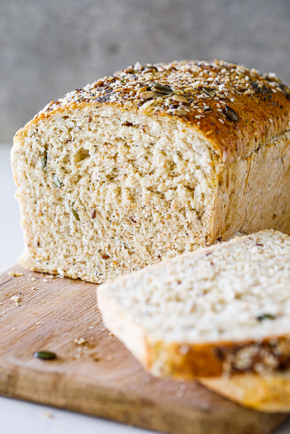

Bread Recipe

EASY HEALTHY SANDWICH BREAD
The most delicious soft and fluffy healthy sandwich bread ever!
This recipe is so easy to make and can be customized with the ingredients you have at home.
ingredients List:
- White flour: Use any white flour you have. Cake flour, All purpose or Bread flour will work.
- Whole wheat flour.
- Quick-cooking oats. If you only have rolled oats, give it a quick pulse in the food processor to break it up a little.
- Seeds. I used a mix but any seeds you have will do. Pumpkin, sesame, flax, chia, poppy and sunflower seeds are all delicious in this bread.
- Salt + Sugar.
- Instant yeast.
- Water
- Butter / oil.
Steps:
- Make the dough: Combine yeast, warm (not hot) water and sugar in a bowl/measuring jug and mix well.
Allow to stand for 5 minutes until foamy.
Combine the flours (start with only 2 cups of white flour), oats, seeds and salt in a large bowl and mix.
Pour in the yeast mixture and bring together into a rough dough. Mix in the room temperature butter or oil and knead. Add the remaining flour,
a tablespoon at a time, and knead until the dough is smooth and soft. You might not need all the flour.
It should be slightly tacky but not overly sticky.
- Allow to rise: Cover the dough with plastic wrap or a damp kitchen towel and allow to rise for 1 hour or until doubled in size. Transfer the dough to a loaf pan and cover again. (When transferring the dough, I loosen it from the bowl, pick it up and place it in the loaf pan, smooth-side up.) Allow to rise for 30 minutes in the pan while the oven preheats.
- Bake the bread: Brush the top of the loaf with a beaten egg then sprinkle on some extra seeds and oats. \
Place in the oven and bake for 30-40 minutes or until the bread is golden brown and sounds hollow when tapped on the bottom.
Remove from the oven and allow to cool completely before slicing.